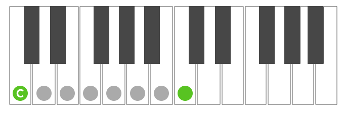
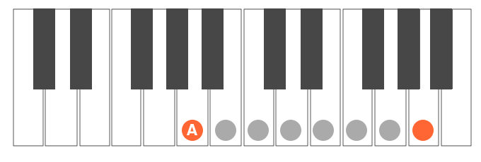

1. 音阶的内在奥秘
1. 音阶的内在奥秘
在前面的章节中我们确立了这样的认知：音阶是将选拔出的音符集合梯级排列而成的产物，其中存在着统帅全局的核心主音。以 Do 为引力中心构建的“大调音阶”，天然擅长诠释明媚欢快的情感色彩：

而一旦改以 La 为引力中心构建“小调音阶”，整个音乐风向瞬间180度大反转，变得擅长勾勒阴郁哀伤的气质：

然而，细细推敲之下，这难道不是一件极其不可思议的奇妙现象吗？既然自始至终使用的都只是这7个完全相同的钢琴白键，按理说无论以谁为中心，音符都在等距周期性地循环流淌，如同旋转楼梯一样，从哪一级台阶切入观测理应没有任何本质分别才对：

引入黑键导致音响改变尚且容易理解；但明明调用的是完全一模一样的7个白键，仅仅将重心位置平移了一下，听觉情绪为何会产生天壤之别？ 为了解开这个谜题，我们必须对声音展开进一步的微观理性解构。
放大审视钢琴键盘的微观构造
让我们重新平下心来，凝视现代音乐分析的基准罗盘——“钢琴键盘”：

顺着钢琴的黑白琴键挨个向前弹奏，音高呈现出平滑均匀的阶梯式爬升。从 Do 到 Do♯、从 Do♯ 到 Re……每一级相邻台阶的物理音高跨度都是完全均等的等距关系[85]。
在这一认知坐标系下，我们猛然发现：此前习以为常的大调音阶，在台阶构成上其实暗藏着极其古怪的跳跃走位——在弹奏“Do-Re-Mi”时，手指其实神不知鬼不觉地连续跨越了整整两级台阶！

不知不觉中，我们在键盘上玩起了“隔一键大跳跃”的游戏。反过来说：在“Mi 与 Fa”之间、以及“Si 与 Do”之间，音高的前进步伐却只有其他位置的整整一半！ 这便是解开一切乐理谜题最至高无上、最性命攸关的底层事实。让我们换个横向视角再次俯瞰琴键：

在 Mi 与 Fa 之间、Si 与 Do 之间，根本不存在黑键！ 两音之间的物理音距，只有常规白键间距的一半。这意味着钢琴白键的音高排列，绝对不是平整顺滑的匀速旋转楼梯，而是一条布满了忽宽忽窄、参差不齐的“崎岖险道”。
在乐理中，这种“不夹杂黑键、仅相隔半个常规台阶”的最小距离单位，被称为（Semitone）；而包含完整“两键跨度”的常规台阶间距，被称为（Whole Tone / Tone）。
半音 (Semitone) : 衡量音高相对跨度的最小基础原子单位。如“Do 与 Do♯”、“Mi 与 Fa”，指代键盘上紧紧相邻的两个键位、或吉他琴颈上相邻1品（Fret）的音高跨度。 : 在微观实验中当然存在更细腻的微音程（如阿拉伯中东音乐广泛使用的四分之一音，以及将八度均分为17或31份的微分音探索）。
全音 (Whole Tone / Tone) : 如“Do 与 Re”、“Mi 与 Fa♯”、“Do♯ 与 Re♯”，指代跨越两个琴键（包含2品格）的音程跨度。其物理音距恰好等于两个半音之和。
借助“全音”与“半音”这对标尺，让我们彻底复盘刚才的悬案：
台阶结构排列与听觉心理情绪
为什么大调音阶与小调音阶会引发截然相反的情绪心理？根本原因就在于它们内部“全音与半音”的排列次序截然不同！ 换言之：正是全音与半音之间忽宽忽窄的组合几何构型，直接锁定了整套音阶的基因灵魂！

大调音阶的全半音分布密码，呈现为规整经典的： “全音 · 全音 · 半音 · 全音 · 全音 · 全音 · 半音”（简称：全全半全全全半）。 正是这种前两个全音舒展铺开、第三级骤然收窄半音的非对称崎岖骨架，赋予了大调昂扬明朗的阳光特质。
反观听感哀伤的小调音阶，其台阶形态如下：

其排列次序赫然转变为： “全音 · 半音 · 全音 · 全音 · 半音 · 全音 · 全音”（简称：全半全全半全全）。 次序一旦重构，由此衍生的全部和声与旋律走势便随之迎来基因突变。从核心主音出发，音程台阶的排列构型，主宰了该音阶最底层的听觉情感原动力！
核心备忘录（Check Point）
钢琴的白键是由“全音”与“半音”不规则错落交织而成的。正因如此，即便同样只弹奏白键，将哪颗音确立为重力中心主音，手指沿途遭遇的“全半台阶崎岖构型”便完全不同，最终在听觉神经中引发的情绪体验自然天差地别。
推演至此，你会惊觉：五线谱的记谱设计，在某种意义上刻意隐藏了真实全音与半音的阶梯真相。在五线谱上，线与间看起来永远是等距离排布的，光看谱面，你丝毫看不出“Mi 与 Fa”之间其实只有半步跨度。 正如前文所分析的，这是五线谱为了最简记述自然音阶而做出的时代工程妥协。但在精细剖析音阶内在微观构造时，借助钢琴键盘、吉他品丝或电脑钢琴卷帘进行几何观测，往往能让我们把底层真相看得更加一清二楚。
2. C大调与A小调的正式命名
此前我们通俗称呼的“大调音阶 / 小调音阶”，在严肃乐理中的正式全称还要更长一些——惯例必须在调式类别前冠以其引力中心音（主音）的音名。
以 Do（C）为核心主音展开的音阶，正式称谓是“C大调音阶（C Major Scale）”；同理，以 La（A）为核心主音展开的音阶，其正式全称则是“A小调音阶（A Minor Scale）”。
“C Major Scale”


“A Minor Scale”


显而易见，它们分别属于大调与小调庞大家族中的一员。既然存在 C 大调，世界上自然存在以其他11个音为起点的“G大调音阶”、“F♯小调音阶”等等。 而这些衍生大调与小调究竟该如何随心所欲地推演构筑？这正是我们在下一节中要攻克的精彩内容。
核心小结
- 在12音键盘与吉他品丝上，最微小的基础音高跨度单位为“半音”；两个半音的跨度合并为“全音”。
- 音阶内在最底层的听觉情感基调，由“从核心主音出发、全音与半音的排列次序”唯一定型。
- 自然大调音阶的台阶密码为“全全半全全全半”；自然小调音阶的台阶密码为“全半全全半全全”。